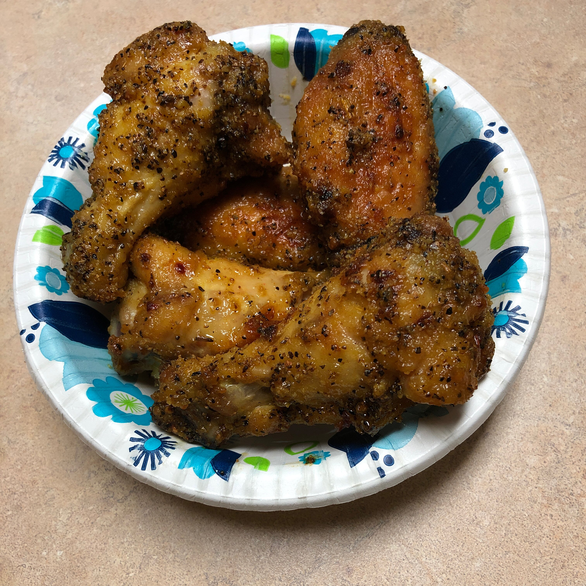

Easy Lemon Pepper Chicken Wings

Description
My family and I love chicken wings, especially during football season. I just got tired of spending so much money on wings for our party that I decided to whip up my own version of Wing Stop's® lemon pepper chicken wings. The ending result was an empty platter and pleased bellies.
Ingredients
- 2 cups oil, or as needed
- 2 tablespoon extra-virgin olive oil
- 1 tablespoon lemon pepper seasoning (such as McCormick®)
- 12 chicken wings
Steps
- Heat oil in a deep-fryer or large saucepan to 375 degrees F (190 degrees C).
- Stir olive oil and lemon pepper together in a bowl.
- Fry the chicken wings in hot oil until no longer pink at the bone and the juices run clear, about 8 minutes. An instant-read thermometer inserted near the bone should read 165 degrees F (74 degrees C).
- Toss hot wings with olive oil mixture to coat.